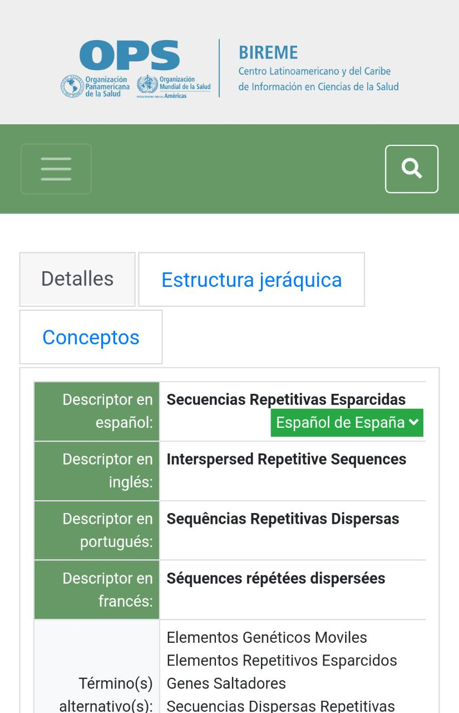

PARC: Proximity
Canva
canva.comwe can see the perfect proportion on this page from one element to another, canva is a good example of proximity
PARC: Alignment
decs
decs.com the grids of each of the elements on this page are evident, although the proportion of space is small, it is seen and understood that each element has an order among itself and they are not randomly placed
PARC: Repetition